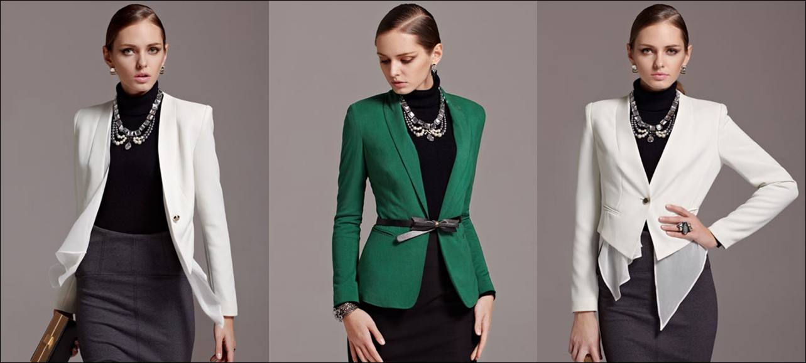

CO-PRODUCTS FROM INDIA
A.COTTON YARN
The most important component that determines the final quality of finished yarn is Cotton fibres. Technically sound cotton sourcing divisions procure highest standard quality cotton from the best cotton crop areas. India local S-6, American Pima, Australian, & other imported cotton is sourced internationally. Fibers and Yarns are tested at each stage according to the most authoritative standards - the USTER statistics. A vast range of products were impressed for its good quality.Count range:
OPEN-END YARN:NE8/1 ,NE 10/1, NE12/1, NE16/1, NE21/1 AND NE30/1
RING SPUN YARN: NE21/1, NE32/1 AND NE40/1
B. NYLON 6/66 TOW
Nylon tow is also called as Polyamide tow. There are tow types, nylon 6 tow and nylon 66 tow. Nylon tow is made from nylon chips. Nylon 6 chip is obtainable by hydrolytic polymerization of caprolactam in the presence of dicarboxylic acids as chain regulators, subsequent processing of the polymer melt into chip, extraction of the low molecular weight portions from the chip with water and subsequent drying of the chip. Nylon 66 is made of hexamethylene diamine and adipic acid are combine with water in a reactor which gives nylon salt after polymerization process nylon 66 is produced. Nylon products have his special characteristics, exceptionally strong, elastic, easy to wash and low in moisture absorbency. Nylon tow is widely used for flocking.Specifications Nylon 6/66 Tow
1)Specifications:0.8D~45D
2)dull,semi-dull,bright
3)content:100%Nylon
C. POLYESTER TOW
Polyester is made from synthesized polymers. Polyester are extremely strong. Polyester is very durable: resistant to most chemicals, stretching and shrinking, wrinkle resistant, mildew and abrasion resistant. Polyester is hydrophobic in nature and quick drying. Polyester retains its shape and hence is good for making outdoor clothing for harsh climates.It is easily washed and dried.Polyester are able to hold forms well.Specifications polyester Tow
1)specifications:1.5D~45D
2)dull,semi-dull,bright
3)content:100%polyester
4)virgin
5)color: white and black
Widely used in the manufacture of static flocking, middle fuzz, sofa, automotive inner ornamenting fabric and flocking carpet.